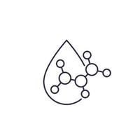
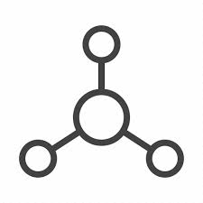

Aloe vera is a water-solubale ingrediant that can be added to water-based formulations such as foams.
Rich in vitamins, full of water and minerals. Known for its moisturising properties of the gel that is
extracted from the aloe vera's leafs.
. Aloe vera has properties such as moisturising, soothing, repairing and hydrating.
. Aloe vera cools and hydrates the skin for burns and the aloe vera gel creates a barrier between for
the skin whilst hydrating it.

Hyaulronic Acid
Hyaulronic acid is a sugar mollecual that naturally occurs in the skin. Helps to bind water and collagen
together, trapping it in the skin. This is so that the skin can appear more dewy, plumped and hydrated.
.As we age, we naturally tend to loose hyaulronic acid and collagen. Healing the skin to become dehydrated
more easily. Hyaulronic acid is one of the hydrating
ingredients that is used in skin care products such as
serums and moisturisers.

Hyaulronic Acid
Hyaulronic acid is a sugar mollecual that naturally occurs in the skin. Helps to bind water and collagen
together, trapping it in the skin. This is so that the skin can appear more dewy, plumped and hydrated.
As we age, we naturally tend to loose hyaulronic acid and collagen. Healing the skin to become dehydrated
more easily. Hyaulronic acid is one of the hydrating ingredients that is used in skin care products such as
serums and moisturisers.